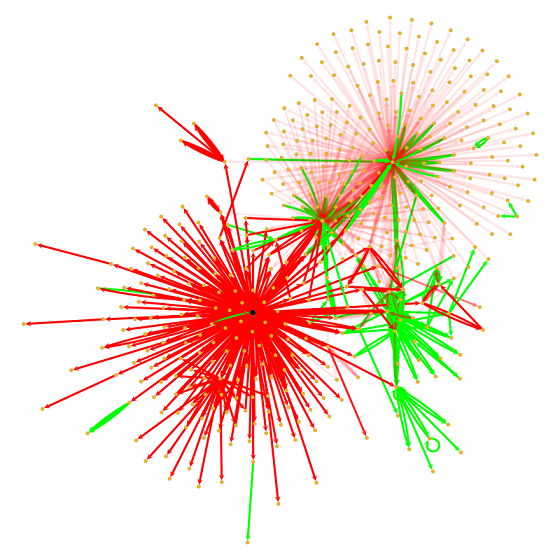

Large Scale Graph Analytics
Timothy Lin
4 March 2020
Motivation
 Source: https://xrpcommunity.blog/the-full-xrp-ledger-visualized/ (1.4m nodes, 2.6m edges)
Source: https://xrpcommunity.blog/the-full-xrp-ledger-visualized/ (1.4m nodes, 2.6m edges)
Challenges of Applied Graph Analytics
- Very large graphs, millions of nodes & edges
- Sampling? (whole is more than the sum of its parts)
- Generating ‘summary statistics’ is also a challenge
- How do we visualize?
- Multi-dimensional
- numerous vertex and edge attributes
- time dimension
- uncertainity / data quality issues
- Scalability
- Resouce constraints (unless we are Google)
- Most db systems do not support graph operations
Problem Overview
 Source: Cylynx - node propagation and decay on a transaction graph
Node Propagation on Transactional Graphs
Use cases:
- Community detection via label propagation
- Precomputing relations between entities
- Semi-supervised tagging
Dataset
- Sparse transaction graph (100m nodes, 300m edges and growing)
- Heavily skewed degree distribution (<10% of the nodes are invovled in 80% of the transactions)
- Time order matters!
Sample Dataset
Vertices
| vertex_uid | attr1 | attr2 | attr3 |
|---|---|---|---|
| se2bhd3s | 1 | 0 | 0 |
| 3fs34rfs | 0 | 1 | 0 |
| 3x6hk6qw | 0 | 0 | 1 |
Edges
| txn_uid | from | to | value | timestamp |
|---|---|---|---|---|
| ASDJASD | se2bhd3s | 3fs34rfs | 10 | 11 Nov 2019 |
| ASDAECD | 3fs34rfs | 3x6hk6qw | 20 | 12 Dec 2020 |
| ESFDSGS | se2bhd3s | 3ds4rask | 30 | 20 Oct 2021 |
Business Requirements
- Solution needs to be scaled to 10-100x larger graphs
- Need exact information on all the nodes / edges to be calculated
- Should be fast enough to try out different parameters and settings across the entire dataset
- Incremental updates should be fast
- Minimize cost (ok that’s my requirement)
Approach
 Source: Cylynx - loop de loop, visualizing paths between random start and end points of a mixer component
Source: Cylynx - loop de loop, visualizing paths between random start and end points of a mixer component
Timeline
- Let’s parallelize it with Spark!
- Dump everything into a graph library!
- Let’s use a more efficient graph library!
- How about a simple loop?
- Let’s add a little magic to the loop
Our current solution is at least 10x faster and 10x cheaper than the initial one
Naive Implementation
- Use spark / graphframe to implement parallel processing
- Guarantees scalability right?
- But, at what cost?
Lesson learnt: Use the right tools for the right job
Graph Library (Networkx)
Pros
- Nice api
- Visualization
- Easy to compute summary statistics
- Documentation
Limitation
- Very slow
- Tricky to deal with time data
- Memory hog
Takeaway: If you have a big data problem, skip networkx
Efficient Graph Library
Check out my repo for more performant libraries.
Pros
- Nice api
- Visualization
- Easy to compute summary statistics
Limitation
- Still not fast enough for our problem (though much faster than networkx)
- Tricky to deal with time data
- Memory intensive
Takeaway: Think about the problem, then re-think
Our Methodology
 Source: Cylynx - hierarchical partitions of a stochastic block model (drawn using graph-tool)
Source: Cylynx - hierarchical partitions of a stochastic block model (drawn using graph-tool)
Let’s consider the problem in more detail
- For every transaction, we need to look up each vertex attribute
- Do a calculation base on that attribute and other edge attribute
- Store it back as a vertex attribute
- Repeat.
- Sounds familiar?
- Hmm…Maybe we can get by with a simple loop
The Loop approach
- Let’s use each tool for what it’s best designed to do
- ‘Skip’ the vertex table
- Pre-merge vertex attributes to edges using our SQL system before looping
- Pre-sort the data, ‘stream’ it and loop over it in time order
Pros
- Very fast (remove 2 k/v lookups)
- Lower memory footprint (no need to store txn information)
- Can we do even better?
Graph insights - degree distribution
 Source: Cylynx - degree distribution of transactions
Source: Cylynx - degree distribution of transactions
Graph insights - markov property
 Source: Cylynx - what’s the catch?
Source: Cylynx - what’s the catch?
The Loop approach v2
- No need to store all the data on memory
- Slightly poorer performance but we can hold intermediate state in a k/v store
- Leverage on the graph degree distribution findings
- Active accounts at t are more likely to be active in t+1
- Let’s use a LRU cache!
Pros
- Fast
- Negligible memory footprint
- Cheap (substitute memory for ssd)
Discussion
 Source: Cylynx - a few random components of our tagged transaction graph, visualized
Source: Cylynx - a few random components of our tagged transaction graph, visualized
Takeaway
- It’s worth spending time to think through the problem carefully
- Personally, I would skip networkx and start exploring with a more performant graph library
- Leveraging on conventional SQL systems, with a small compute machine, we can do very impressive calculations
- Our solution is 10x faster and cheaper than our previous one
- Still further room to optimize but it’s really unnecessary at this point
Ongoing Challenges
- Visualization tools are still quite primitive for big graphs
- How do we visualize large graphs meaningfully?
- How can we allow efficient exploration of neighbourhoods?
- Distributed graph computing
- How do we do write tests on big graphs / monitor algorithm performance?
- How can we make graphDBs and graph computation software work seamlessly together?